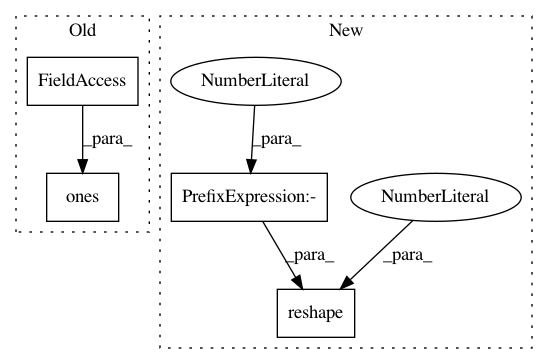

befa2449f4fd9119a45ae6be9b34acd634f8decd,deslib/tests/des/test_desp.py,,test_select_two_classes,#Any#Any#,47
Before Change
des_p_test = DESP(create_pool_classifiers())
des_p_test.fit(X_dsel_ex1, y_dsel_ex1)
des_p_test.DFP_mask = np.ones(des_p_test.n_classifiers_)
des_p_test.neighbors = neighbors_ex1[index, :]
des_p_test.distances = distances_ex1[index, :]
competences = des_p_test.estimate_competence(query)
After Change
des_p_test = DESP(create_pool_classifiers())
des_p_test.fit(X_dsel_ex1, y_dsel_ex1)
neighbors = neighbors_ex1[index, :].reshape(1, -1)
distances = distances_ex1[index, :].reshape(1, -1)
competences = des_p_test.estimate_competence(query, neighbors, distances)
selected = des_p_test.select(competences)
In pattern: SUPERPATTERN
Frequency: 3
Non-data size: 4
Instances
Project Name: scikit-learn-contrib/DESlib
Commit Name: befa2449f4fd9119a45ae6be9b34acd634f8decd
Time: 2018-09-29
Author: rafaelmenelau@gmail.com
File Name: deslib/tests/des/test_desp.py
Class Name:
Method Name: test_select_two_classes
Project Name: acoular/acoular
Commit Name: d6d6370cf0b7cb3d312b087ee63fc08f8f9b21ea
Time: 2020-06-02
Author: s.jekosch@tu-berlin.de
File Name: acoular/grids.py
Class Name: PolySector
Method Name: contains
Project Name: scikit-learn-contrib/DESlib
Commit Name: befa2449f4fd9119a45ae6be9b34acd634f8decd
Time: 2018-09-29
Author: rafaelmenelau@gmail.com
File Name: deslib/tests/des/test_knorae.py
Class Name:
Method Name: test_select